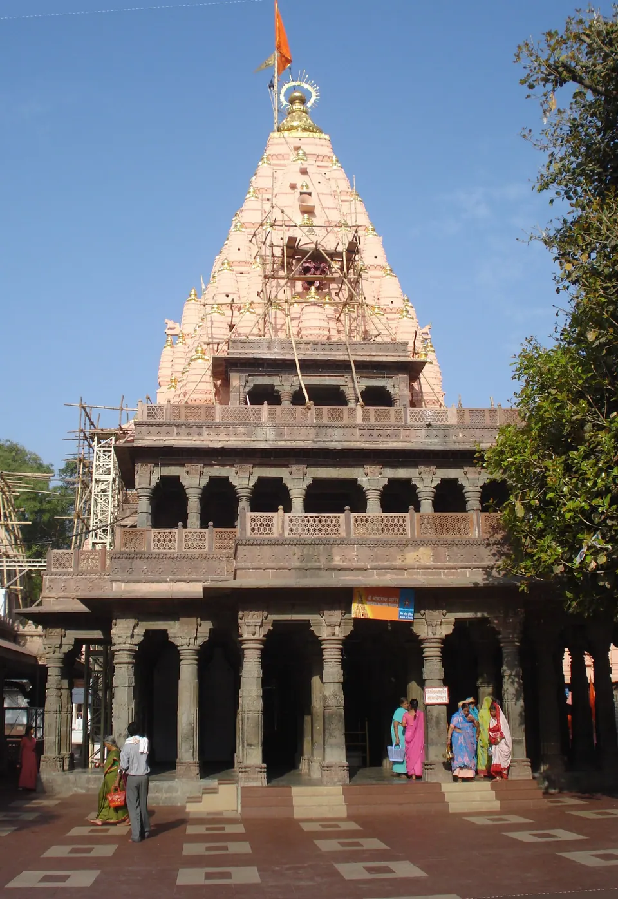
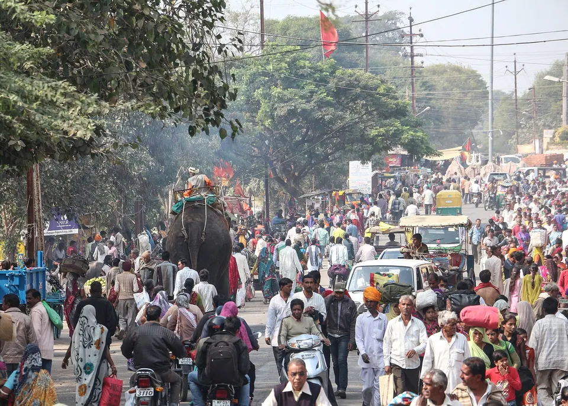

How to Book Mahakal Bhasma Aarti: Online, Tatkal and Dress Code

To book Mahakal Bhasma Aarti, register online on the official Shri Mahakaleshwar portal, where slots open about 30 days ahead at 8 AM, and keep your original photo ID ready. Reports from April 2026 say the old counter queue has been discontinued and a limited tatkal quota opens online the day before. Rules have changed more than once this year, so always confirm on the official site.
The first question most families ask is "Will we get a seat?" Booking early helps. Here is how booking works as of October 2026, what to prepare, and how to keep the 4 AM start gentle on your parents and children. Our wider guide to Mahakaleshwar Jyotirlinga covers the temple itself.

What Bhasma Aarti is and why it needs a permit
Bhasma Aarti is the first aarti of the day at Mahakaleshwar, performed before sunrise, when the Jyotirlinga is worshipped with sacred ash. It is among the most sought-after experiences in Ujjain, and because the space is limited, entry is by permit and not open to everyone who turns up.
One point families often miss: if you are not able to get a permit, regular darshan through the day is still available, and many families find it just as moving.
Step-by-step: booking online
1. Use only the official portal
The official site is shrimahakaleshwar.com. Some travel sites use similar names and may charge extra. The temple committee handles bookings, so avoid middlemen.
2. Know when slots open
According to Ujjain Darshan, advance booking opens up to 30 days before the aarti, at 8:00 AM daily. A Nav Bharat report of 15 April 2026 says the window was cut from three months to one month. Set an alarm for 8 AM on the day your date enters the window.
3. Keep documents ready
You will upload a photo and a government ID for every devotee. Ujjain Darshan says the original ID used in registration must be shown at the gate, so carry the same card (Aadhaar or passport) you registered with. Check the official portal for how children and the name on the pass are handled.
4. Tatkal quota for last-minute plans
The Nav Bharat report says about 300 permits that used to be free at the counter became an online tatkal quota at ₹200 per person, opening at 8 AM the day before, first come, first served. Ujjain Darshan also describes a one-day-ahead digital application. Treat the amount as indicative and check the portal.
5. Counter booking
Both sources say offline counter booking has been discontinued, though some older pages still describe a queue near the temple. If you read about a counter, check it against the official portal before planning around it.
Reporting time, dress code and what to carry
Sources differ on the exact reporting time. Ujjain Darshan's schedule lists the aarti from 4:00 AM, while its booking page mentions reporting gates between 1:30 and 2:30 AM. Your pass should state the reporting time, so follow that and not a blog, including ours.
For clothing, Ujjain Darshan says men wear a traditional dhoti with an angavastram (a shoulder cloth), and women wear a saree or salwar suit with a dupatta. Check the official portal for what may be carried into the sanctum, and consider leaving phones and electronics at the villa. Carry printed copies of your booking confirmation and your original ID.
Winter shift in timing
The aarti time can shift with the season, so check the time on your pass when you book.
Planning the night before with elders and children
A 4 AM aarti means waking around 1 or 2 AM. Eat an early, light dinner. Sleep as soon as you can, keep warm clothes handy in winter, and keep prasad money, ID and passes in one pouch. Decide beforehand who will stay back with the youngest children if they cannot manage the early hours.
If elders find the long queue tiring, tell the volunteers at the gate. Do not assume special arrangements, because these depend on the day. For transfers and local trips, see our travel page.
If you do not get a Bhasma Aarti permit
It happens, especially on festival weekends. The temple also offers Sandhya and Shayan aarti by online booking, reported at ₹250 per person by Nav Bharat, and regular darshan queues run through the day. Keep your dates flexible for a few days if you can.
Where to stay near Mahakaleshwar for Bhasma Aarti
All five AP Villas are within 2 km of Mahakaleshwar Jyotirlinga, about 6 minutes by car or 12 minutes on foot, and in-house guests get a complimentary Mahakal shuttle (up to 5 guests per trip).


Rudrangan Suites: an easy base for an early start
Rudrangan Suites opened in 2026 with designer finishes, premium linens and garden seating. It has 3 bedrooms and sleeps 6, from ₹5,200 per night. There is a lift, the stay is wheelchair friendly and pets are welcome, which helps when grandparents are travelling. The kitchen has an induction cooktop, microwave and mini fridge, so you can make tea or a light meal before the early start. Check-in is 10:30 AM and check-out 9:30 AM, and a later check-out can be arranged on request, subject to availability.
For larger groups
- Divinestay: 3 bedrooms, sleeps 8, from ₹5,500 per night, with a private rooftop.
- Villa Aranya: 3 bedrooms, sleeps 8, from ₹5,800 per night.
- Om Shanti Stay: 2 bedrooms, sleeps 6, from ₹4,500 per night.
Our caretaker explains the Bhasma Aarti booking process (online or counter) on your arrival evening, and the shuttle drops you at the temple gate by 3:30 AM for the 4 AM aarti. The help is complimentary; the temple's own permit is booked by you. See all five on our villas page, or read our guide on where to stay in Ujjain.
Common mistakes to avoid
- Booking through unofficial sites that add a service fee.
- Registering with one ID and carrying another at the gate.
- Arriving late. Reach early, and follow the reporting time on your pass.
- Forgetting printed confirmations, or not checking what you are allowed to carry inside.
- Planning an early-morning train or a long drive right after the aarti. Keep the first day free.
If you are also planning around festivals, our post on Ujjain in November helps with crowds, and the contact page answers common stay questions.
Frequently asked questions
How do I book Bhasma Aarti at Mahakaleshwar online?
Register on the official Shri Mahakaleshwar portal, shrimahakaleshwar.com, upload a photo and government ID for each devotee, and select your date. Advance slots are reported to open about 30 days before at 8 AM. Keep the confirmation printed and bring your original ID.
How many days before can I book Bhasma Aarti?
Reports from 2026 say about 30 days in advance, down from three months earlier. A tatkal quota is reported to open the day before at 8 AM. The rule has changed before, so please check the portal for the current window on your date.
Can I still book Bhasma Aarti at the counter?
Nav Bharat reported on 15 April 2026 that offline permits were discontinued, and Ujjain Darshan says the same. Some older pages still mention a counter queue, so do not rely on it. Book online and confirm on the official site.
What is the dress code for Bhasma Aarti?
Ujjain Darshan says men wear a traditional dhoti with an angavastram, and women wear a saree or salwar suit with a dupatta. The temple sets the rules, so check the portal or your pass for exact requirements.
Can AP Villas book the Bhasma Aarti permit for us?
No. Our caretaker explains the booking process on your arrival evening and the shuttle drops you at the temple gate by 3:30 AM for the 4 AM aarti, but the temple's own permit is booked by the guest. We are happy to guide you on WhatsApp beforehand.
Sources
- Ujjain Darshan: Bhasma Aarti booking system (2026 update)
- Ujjain Darshan: Bhasma Aarti booking guide, dress code and entry timing
- Ujjain Darshan: Mahakaleshwar darshan guide 2026
- Nav Bharat Live: new Bhasma Aarti rules (15 April 2026)
- Shri Mahakaleshwar temple: official portal
Timings, prices and dates change, especially on festival days. Please verify before you travel with the official temple or government site.
If you would like help planning the days around your Bhasma Aarti date, write to us and we will tell you honestly what is available.
— Apoorv, Founder, AP Villas & Resorts